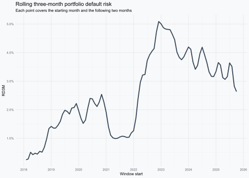
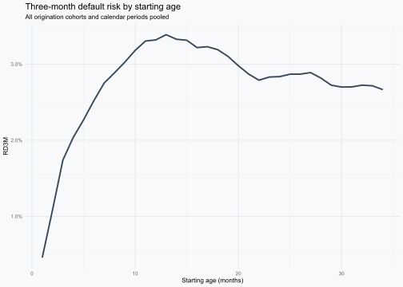
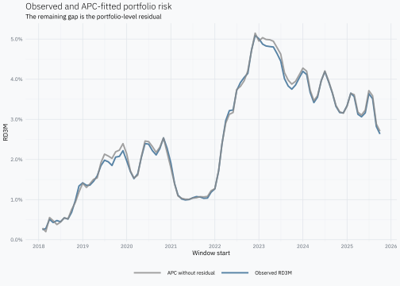
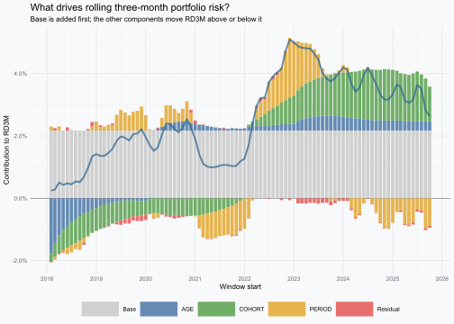
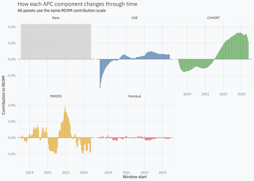

Decomposing credit risk into age, cohort and period
A step-by-step decomposition of rolling three-month credit risk using public Bondora loan data.
R
credit risk
Author
Joshua Kunst
Published
September 12, 2026
Credit vintages are usually read over horizons longer than one month. A twelve-month default rate is natural for regulatory and annual portfolio views, while a shorter horizon is often more useful for early delinquency monitoring. In this post we use three months: long enough for early deterioration to emerge, but short enough to retain useful timing information.
Prefer a visual explanation?
If you would rather begin with the intuition, the interactive story shows the same journey visually: first the loans and their three-month outcomes, then the AGE, COHORT and PERIOD decomposition. This post is the complete explanation; the visualization is its shorter companion.
The quantity of interest is the rolling three-month default risk, or RD3M. It asks a direct question: among the loans alive today, how many default during the next three months?
Every observation has three coordinates:
Age\(a\): months since origination at the beginning of the window.
Cohort\(c\): origination month.
Period\(p\): first calendar month of the three-month window.
With the convention used here, they satisfy:
\[
p=c+a.
\]
We will construct RD3M from individual loans, arrange it as a vintage table, decompose it sequentially into AGE, COHORT and PERIOD effects, and finally return to the observed portfolio risk.
What exactly does RD3M measure?
RD3M is simply a ratio:
\[
RD3M=
\frac{\text{loans that default during the next three months}}
{\text{loans alive at the beginning of the window}}.
\]
The denominator includes only loans for which the complete three-month outcome can be observed. Otherwise a recent loan could be counted as a non-default even though its full outcome window has not happened yet.
The windows are rolling. A default at age 6 belongs to the windows starting at ages 4, 5 and 6:
Starting age
Window
Default at age 6?
3
3–5
No
4
4–6
Yes
5
5–7
Yes
6
6–8
Yes
This overlap is intentional. We are asking the same forward-looking question at each possible starting month. It also means consecutive RD3M observations share two calendar months and must not be interpreted as independent measurements.
Public loan data
Go & Grow’s public statistics page links a downloadable Bondora loan dataset. The workbook contains one row per loan and a second sheet with its data dictionary.
For this example we use Estonian loans. The source workbook is large, so the preparation chunk stores a small local RDS containing only the required columns. Later renders reuse that file.
Boolean. Flag indicating if the loan is in default.
loan_id
Unique identifier of the loan.
loan_issued_at
Time when loan was issued.
loan_status
Shows the status of the loan on the given date.
months_on_book
Months a loan has been in active status.
Preparing complete three-month windows
We keep cohorts originated from 2018 through 2022 and follow them through at most 36 months. A three-month window can begin no later than age 34 if it must end by age 36.
cohort_from<-as.Date("2018-01-01")cohort_to<-as.Date("2022-12-01")max_age<-36Lhorizon_months<-3L# A window beginning at age 34 covers ages 34, 35 and 36.max_start_age<-max_age-horizon_months+1Lloans<-loans_raw|>mutate(# Excel stores this field as a serial date in the current workbook. loan_date =if(inherits(loan_issued_at, "Date")){loan_issued_at}else{as.Date(loan_issued_at, origin ="1899-12-30")}, cohort =floor_date(loan_date, unit ="month"), months_on_book =as.integer(months_on_book), is_default =as.logical(is_default), default_age =if_else(is_default, months_on_book, NA_integer_), observed_age =pmin(months_on_book, max_age),# Once default occurs, its three-month outcome is already known. last_start_age =if_else(!is.na(default_age)&default_age<=max_age,pmin(default_age, max_start_age),pmin(observed_age-horizon_months+1L, max_start_age)))|>filter(cohort>=cohort_from,cohort<=cohort_to,observed_age>=1L,last_start_age>=1L)|>select(loan_id,country,loan_status,cohort,months_on_book,is_default,default_age,observed_age,last_start_age)glimpse(loans)
For a surviving loan, last_start_age requires all three future months to be observed. For a defaulted loan, the outcome is known as soon as default occurs, so a window ending after that date does not create an unknown outcome.
uncount() creates one row for every eligible starting age. The period is the first month of the forward window; window_end_period is its third and final month.
one_loan_windows<-one_loan|>uncount(last_start_age, .id ="age")|>mutate( period =cohort%m+%months(age), window_end_period =period%m+%months(horizon_months-1L), default_3m =as.integer(!is.na(default_age)&default_age>=age&default_age<=age+horizon_months-1L))|>select(loan_id,cohort,age,period,window_end_period,default_age,default_3m)one_loan_windows
The repeated 1 values around the default are not duplicate events in an event count. They are three valid answers to three different questions: whether the same loan will default within three months when observed from three consecutive starting ages.
Now group the rows by cohort, starting age and starting period. Each cell contains the loans eligible at the beginning of that window and the number that default during its three months.
ggplot(portfolio_rd3m, aes(period, rd3m))+geom_line(linewidth =0.9, alpha =0.8)+scale_x_date(date_breaks ="1 year", date_labels ="%Y")+scale_y_continuous(labels =scales::label_percent(accuracy =0.1))+labs( title ="Rolling three-month portfolio default risk", subtitle ="Each point covers the starting month and the following two months", x ="Window start", y ="RD3M")

This curve tells us when forward-looking portfolio risk changes. It does not yet tell us whether the movement comes from loan age, the origination cohorts present in the portfolio or conditions shared by the calendar window.
Reading RD3M as a vintage
A vintage table places cohorts in rows and starting ages in columns. Here each cell is a forward-looking three-month rate rather than a cumulative rate since origination.
Moving horizontally follows one cohort as it ages. Moving vertically compares different origination cohorts at the same age. A calendar period cuts diagonally through the table because different cohorts reach that period at different ages.
All these cells begin in April 2020 and end in June 2020, but they contain loans at different ages and from different origination cohorts. That is the variation the APC decomposition tries to organise.
Raw age and cohort profiles
Pooling cohorts and periods gives a first descriptive view of how three-month risk changes with age.
ggplot(age_rd3m, aes(age, rd3m))+geom_line(linewidth =0.9, alpha =0.8)+scale_y_continuous(labels =scales::label_percent(accuracy =0.1))+labs( title ="Three-month default risk by starting age", subtitle ="All origination cohorts and calendar periods pooled", x ="Starting age (months)", y ="RD3M")

The same calculation by cohort shows differences among origination months before adjusting for their age and calendar-period composition.
Because \(p=c+a\), a linear trend can be transferred among AGE, COHORT and PERIOD without changing the fitted values. The data alone cannot decide which component owns that trend.
This post uses a transparent sequential allocation:
\[
\text{mean}\rightarrow AGE\rightarrow COHORT\rightarrow PERIOD
\rightarrow\text{residual}.
\]
AGE receives the weighted pattern left after the mean; COHORT receives what is left after AGE; PERIOD receives what remains after both. Changing the order can change the individual components, even though the same observations are being described.
Sequential APC decomposition
Some cells contain no defaults, so their raw RD3M is zero and its logit is not finite. We use the small empirical-logit correction:
PERIOD captures common movements among all windows beginning in the same calendar month, after AGE and COHORT have received their sequential contributions.
# A tibble: 1 × 1
max_rate_difference
<dbl>
1 5.55e-17
The difference should be zero apart from numerical precision.
Reading the three effects
The components are additive in log-odds. Exponentiating one effect gives an odds multiplier for three-month default: 1x means no change relative to the relevant sequential baseline, 1.5x means 50% higher odds and 0.5x means half the odds.
apc_decomposition|>distinct(age, age_effect)|>ggplot(aes(age, exp(age_effect)))+geom_hline(yintercept =1, linetype ="dashed")+geom_line(linewidth =0.9, alpha =0.8)+scale_y_continuous( labels =scales::label_number(accuracy =0.01, suffix ="x"))+labs( title ="AGE effect", subtitle ="Three-month odds after removing the common mean", x ="Starting age (months)", y ="Odds multiplier")
apc_decomposition|>distinct(cohort, cohort_effect)|>ggplot(aes(cohort, exp(cohort_effect)))+geom_hline(yintercept =1, linetype ="dashed")+geom_line(linewidth =0.9, alpha =0.8)+scale_x_date(date_breaks ="1 year", date_labels ="%Y")+scale_y_continuous( labels =scales::label_number(accuracy =0.01, suffix ="x"))+labs( title ="COHORT effect", subtitle ="Three-month odds after AGE is removed", x ="Origination cohort", y ="Odds multiplier")
apc_decomposition|>distinct(period, period_effect)|>ggplot(aes(period, exp(period_effect)))+geom_hline(yintercept =1, linetype ="dashed")+geom_line(linewidth =0.9, alpha =0.8)+scale_x_date(date_breaks ="1 year", date_labels ="%Y")+scale_y_continuous( labels =scales::label_number(accuracy =0.01, suffix ="x"))+labs( title ="PERIOD effect", subtitle ="Three-month odds after AGE and COHORT are removed", x ="Window start", y ="Odds multiplier")
These are relative effects, not three separate default rates. A peak in AGE identifies starting ages with higher three-month odds. A peak in COHORT identifies origination months with higher odds after AGE is removed. A peak in PERIOD marks starting windows with higher odds after both previous allocations.
Returning to the RD3M scale
To express the decomposition in probability points, apply plogis() after each sequential step and define each contribution as the change from the previous step.
apc_decomposition<-apc_decomposition|>mutate( risk_base =plogis(mu), risk_after_age =plogis(mu+age_effect), risk_after_cohort =plogis(mu+age_effect+cohort_effect), risk_after_period =fitted_rd3m, contribution_age =risk_after_age-risk_base, contribution_cohort =risk_after_cohort-risk_after_age, contribution_period =risk_after_period-risk_after_cohort,# The final display residual closes the gap to the unadjusted cell RD3M. contribution_residual =rd3m-risk_after_period, reconstructed_rd3m =risk_base+contribution_age+contribution_cohort+contribution_period+contribution_residual)
The first four terms reconstruct the fitted value. The final residual returns to the raw cell RD3M rather than to the continuity-adjusted q.
# A tibble: 1 × 1
max_rd3m_difference
<dbl>
1 6.94e-18
First compare observed RD3M with the APC fit before the residual is added.
ggplot(portfolio_apc, aes(period))+geom_line(aes(y =observed_rd3m, colour ="Observed RD3M"), linewidth =0.9, alpha =0.8)+geom_line(aes(y =fitted_rd3m, colour ="APC without residual"), linewidth =0.9, alpha =0.8)+scale_colour_manual( values =c("Observed RD3M"="#2F6690","APC without residual"="#8A8A8A"))+scale_x_date(date_breaks ="1 year", date_labels ="%Y")+scale_y_continuous(labels =scales::label_percent(accuracy =0.1))+labs( title ="Observed and APC-fitted portfolio risk", subtitle ="The remaining gap is the portfolio-level residual", x ="Window start", y ="RD3M", colour =NULL)

Now prepare the five additive contributions.
portfolio_components<-portfolio_apc|>select(period, Base =base, AGE =age_component, COHORT =cohort_component, PERIOD =period_component, Residual =residual_component)|>pivot_longer( cols =-period, names_to ="component", values_to ="contribution")|>mutate( component =factor(component, levels =c("Base", "AGE", "COHORT", "PERIOD", "Residual")))component_colours<-c("Base"="#c9c9c9","AGE"="#4C78A8","COHORT"="#59A14F","PERIOD"="#E3A72F","Residual"="#E45756")
ggplot(portfolio_components,aes(period, contribution, fill =component))+geom_hline(yintercept =0, linewidth =0.3, colour ="#808080")+# Reverse the default stack so Base is always added first from zero.geom_col( width =25, alpha =0.85, position =position_stack(reverse =TRUE))+geom_line( data =portfolio_apc,aes(period, observed_rd3m), colour ="#2F6690", linewidth =0.9, alpha =0.75, inherit.aes =FALSE)+scale_fill_manual(values =component_colours)+scale_x_date(date_breaks ="1 year", date_labels ="%Y")+scale_y_continuous(labels =scales::label_percent(accuracy =0.1))+labs( title ="What drives rolling three-month portfolio risk?", subtitle ="Base is added first; the other components move RD3M above or below it", x ="Window start", y ="Contribution to RD3M", fill =NULL)

The blue line is observed RD3M. Base is the first component added and therefore always occupies the same range from zero to its constant value. AGE, COHORT, PERIOD and the residual are stacked afterwards: positive contributions extend above the baseline and negative contributions extend below zero. Together, the five components add exactly to observed RD3M.
The components are easier to inspect separately.
ggplot(portfolio_components,aes(period, contribution, fill =component))+geom_hline(yintercept =0, linewidth =0.3, colour ="#808080")+geom_col(width =25, alpha =0.9, show.legend =FALSE)+facet_wrap(vars(component), ncol =3)+scale_fill_manual(values =component_colours)+scale_x_date(date_breaks ="2 years", date_labels ="%Y")+scale_y_continuous(labels =scales::label_percent(accuracy =0.1))+labs( title ="How each APC component changes through time", subtitle ="All panels use the same RD3M contribution scale", x ="Window start", y ="Contribution to RD3M")

How overlapping windows change the reading
Rolling three-month windows are appropriate for this target, but they change the temporal meaning of the plots.
Suppose defaults increase only in April. That event can raise the RD3M windows beginning in February, March and April because all three include April. A PERIOD movement labelled February therefore describes the February–April window; it does not prove that the underlying shock occurred in February.
Three consequences follow:
Adjacent points are mechanically related. They share two of their three outcome months and many of the same loans.
Short shocks appear wider. A movement concentrated in one outcome month can affect as many as three consecutive starting periods.
The components describe forward risk. AGE, COHORT and PERIOD explain the probability of default over a three-month window, not an isolated monthly event rate.
None of these properties makes RD3M incorrect. They are consequences of asking a rolling forward-looking question. A rolling RD12M series has the same structure with even more overlap.
Methodological details and caveats
Window start versus outcome month
Throughout the post, period means the start of the three-month window. Its outcome is observed from period through window_end_period. Using the end month instead would shift the labels by two months without changing the underlying windows, so the convention must remain explicit when results are compared with external events.
Complete outcomes and right censoring
Non-defaulted loans enter a cell only when all three outcome months are observed. This prevents recent loans from being counted automatically as non-defaults. Nevertheless, early repayment or another non-default exit can still change which loans remain observable. If exit is related to credit quality, the resulting composition deserves separate analysis.
Descriptive decomposition versus statistical inference
The construction here is descriptive. The algebraic reconstruction does not require consecutive windows to be independent. Independence matters if standard errors, confidence intervals or hypothesis tests are later attached to the effects. In that case, treating every rolling window as an independent record would understate uncertainty. Resampling or covariance estimation should preserve the loan-level and temporal dependence.
Sequential allocation
The APC identity prevents a unique unconstrained separation. This post resolves the ambiguity by choosing AGE → COHORT → PERIOD. The result should therefore be read as one transparent allocation of observed variation, not the only possible one. Repeating the calculation under alternative orders is a useful sensitivity check.
Why the weighted effects average to zero
There is no additional centring step. mu makes the first residual have weighted mean zero. AGE is the weighted group mean of that residual, so its overall weighted mean is also zero. Subtracting AGE leaves another zero-mean residual, and the same argument repeats for COHORT and PERIOD.
# A tibble: 1 × 3
age cohort period
<dbl> <dbl> <dbl>
1 -4.42e-16 3.22e-18 5.33e-18
Monetary weights
loans_at_risk gives every loan the same influence. Production credit-risk work often weights by balance, exposure or EAD. Bondora provides original loan amount, but a genuine balance-weighted history would require historical balances at each window start rather than a current snapshot.
A compact practical version
Once the definitions are understood, the essential calculation is short:
Everything after this table concerns how its variation is allocated and interpreted. The target itself remains simple: defaults during the next three months divided by loans alive at the beginning of a fully observable window.